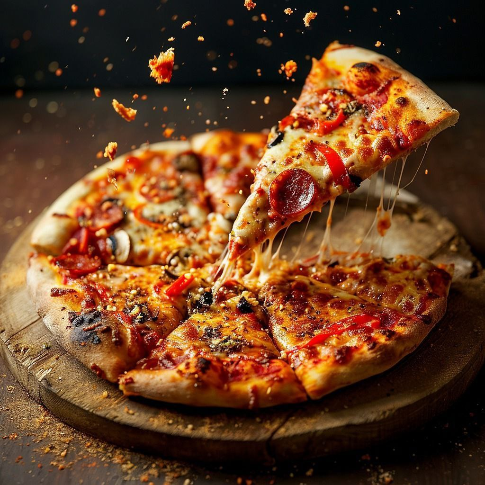
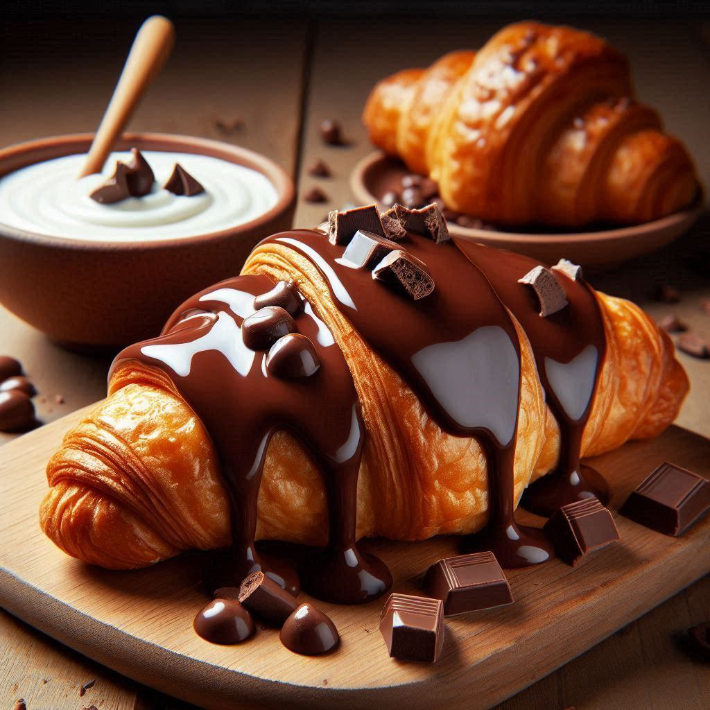
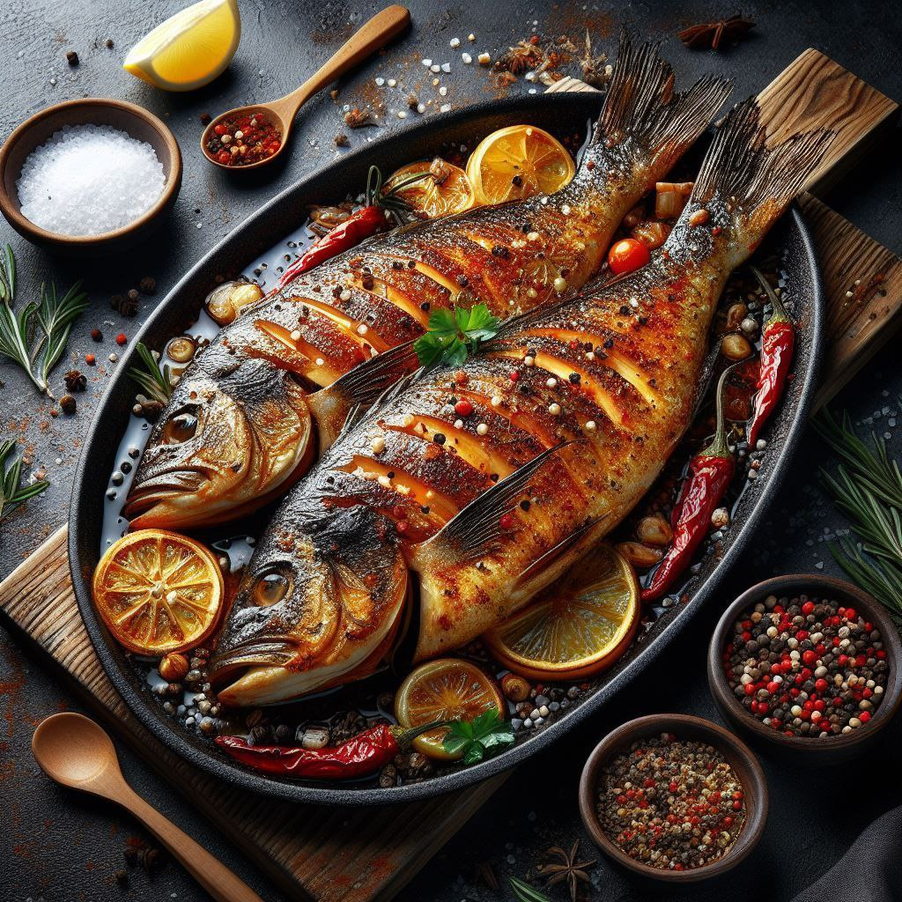
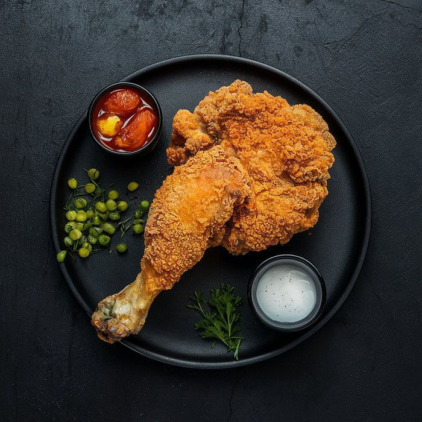
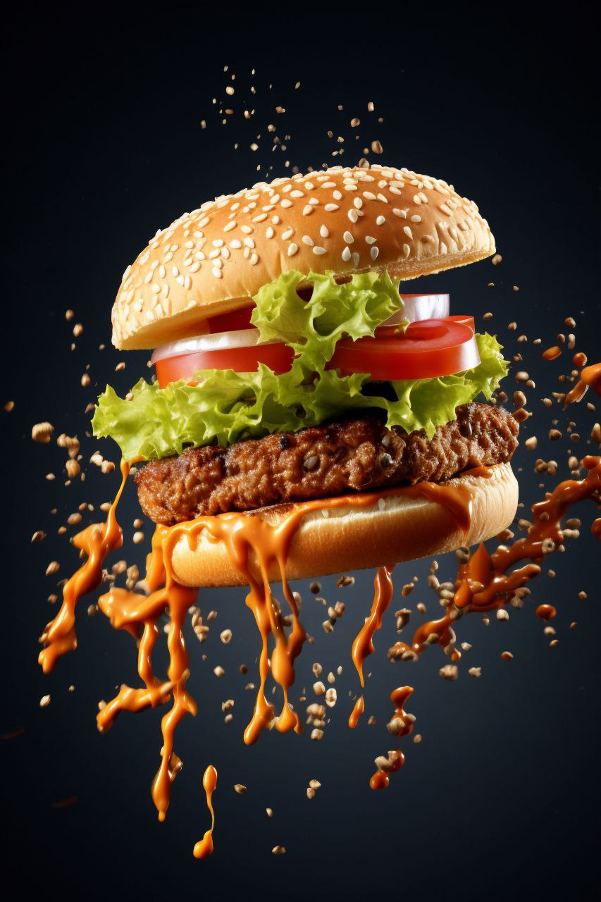
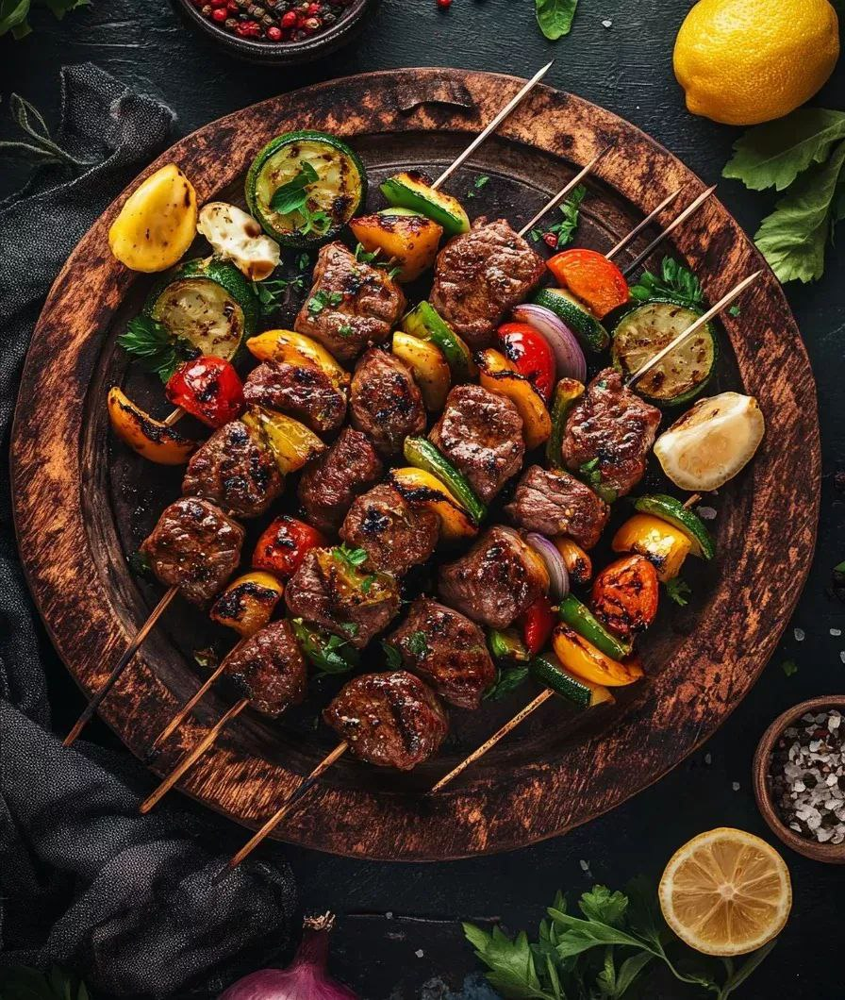

Here are our delicious picks for our clients this week. We hope you enjoy them!
Pizza
Pizza is one of the world's favorite dishes. It consists of a baked dough base topped with tomato sauce, cheese, and a variety of toppings.

Croissant
The croissant is a buttery, flaky pastry that originated in France. It can be filled with chocolate, cheese, or simply served plain with coffee.

Fish
Fish dishes are loved for their flavor and health benefits. Whether grilled, fried, or baked, fish is rich in protein and omega-3.

Broasted Chicken
Broasted chicken is a crispy and juicy delight with a golden crust and tender meat. Often served with fries, garlic sauce, and pickles.

Hamburger
A hamburger is made with a beef patty, lettuce, tomato, cheese, and sauces inside a soft bun. It's a classic fast food favorite.

Kebab
Kebab is skewered and grilled meat, marinated in spices. Served with rice, salad, or bread — a flavorful Middle Eastern delight.
